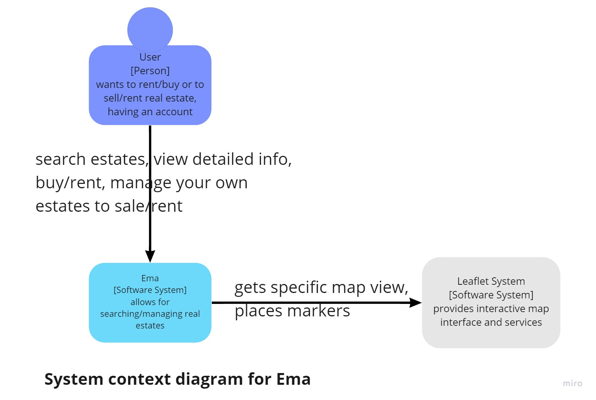
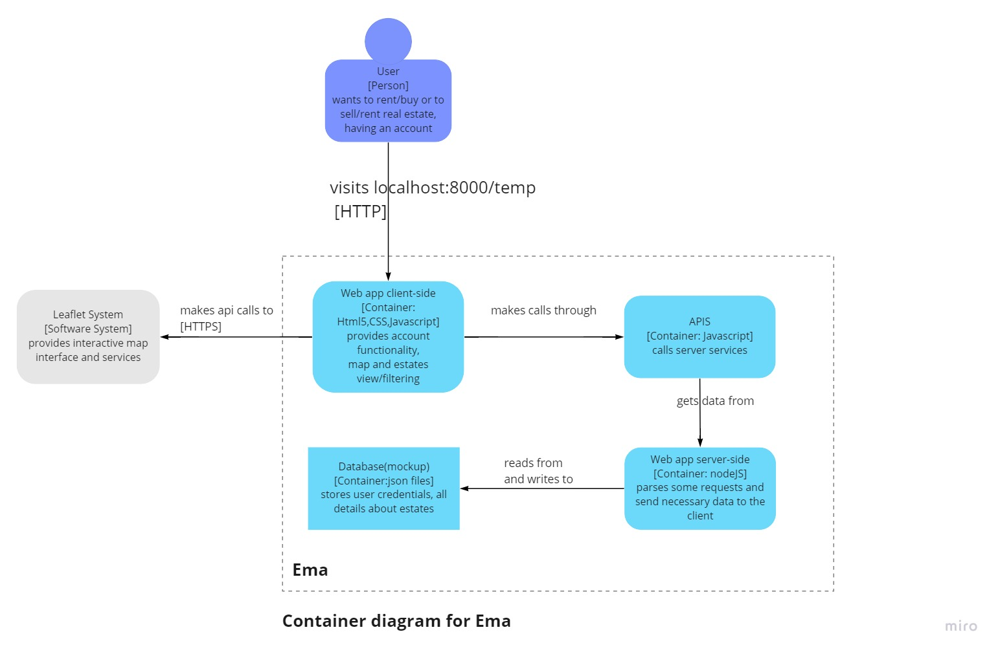
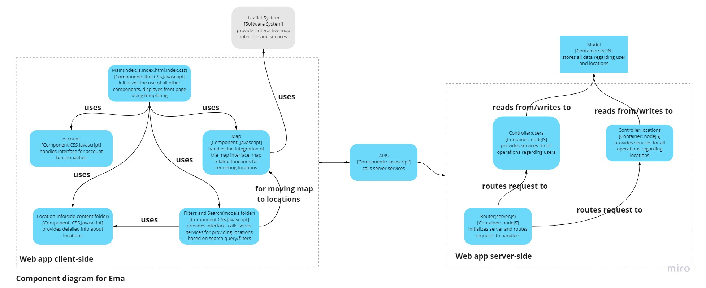

Etapele de dezvoltare a proiectului:
Pasul 1: am creat o schita a interfetei aplicatiei dupa care sa ne coordonam si sa impartem sarcinile fiecarui membru.
Pasul 2: am creat aplicatia pe partea de client, cu functionalitate minima, insemnand ca erau implementate doar unele butoane care faceaua anumite elemente de pe pagina sa apara si sa dispara.
Pasul 3: Am creat data model pentru imobile si pentru useri.
Pasul 4:Am creat partea de server a aplicatiei care foloseste modelele contruite anterior pentru servicii.
Pasul 5:Concurent cu Pasul 4 am implementat functionalitati pe partea de client folosind harta.
Pasul 6:Am contruit partea de API care apeleaza serviciile din server si leaga clientul de server.
Pasul 7:Am facut clean-up la cod si la materialele pe care nu le-am mai folosit in final.
Diagramele C4 primele 3 nivele pentru aplicatia noastra:
  